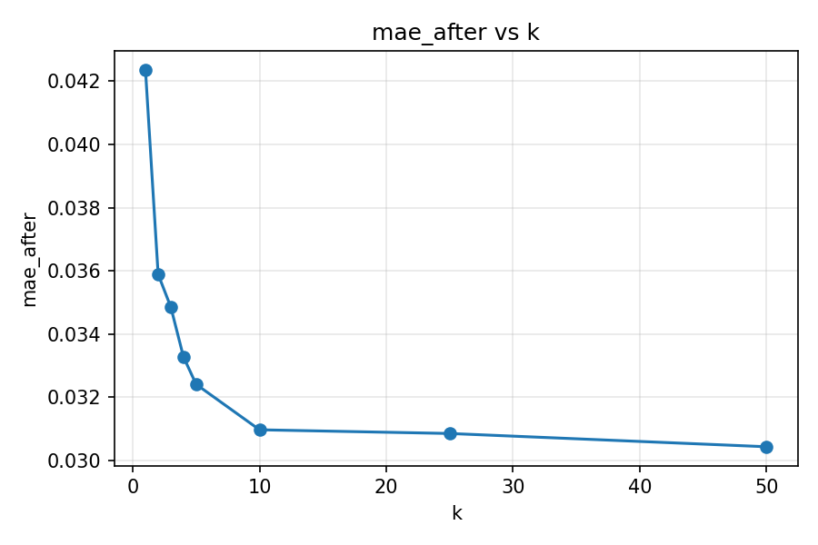
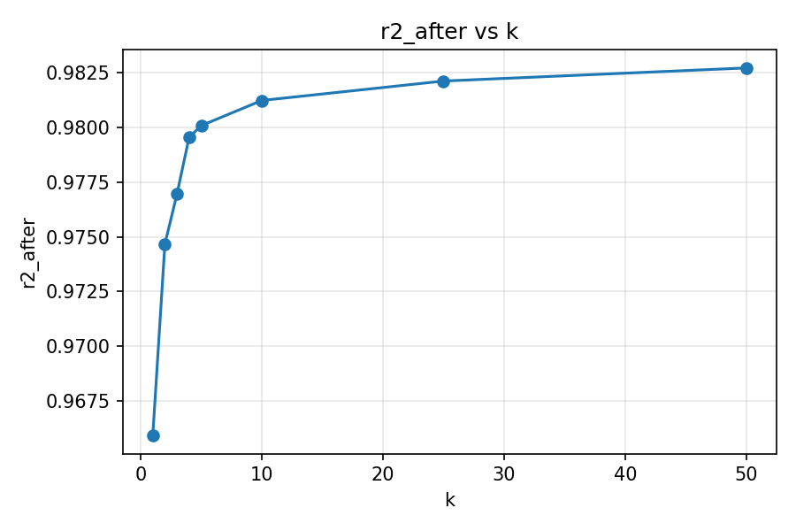
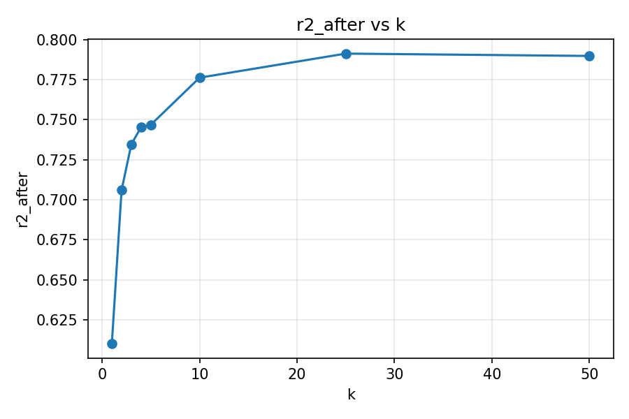
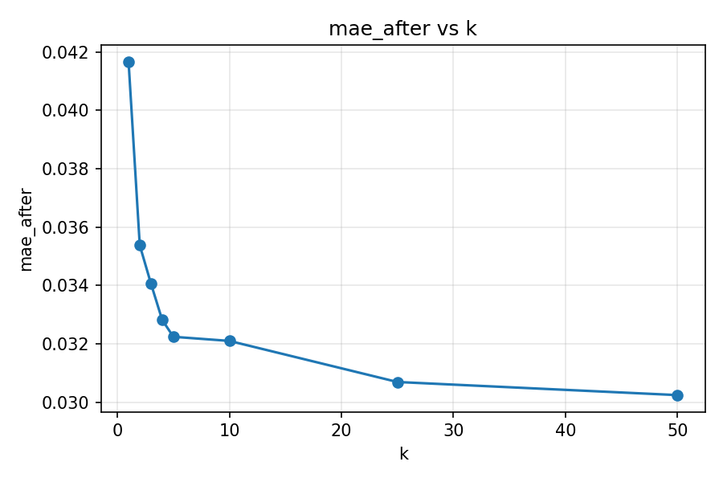
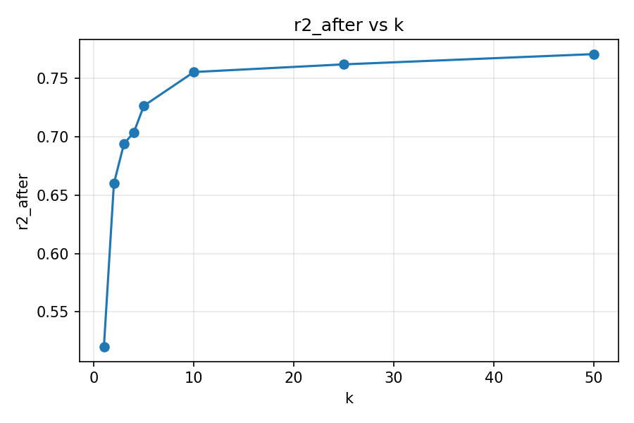
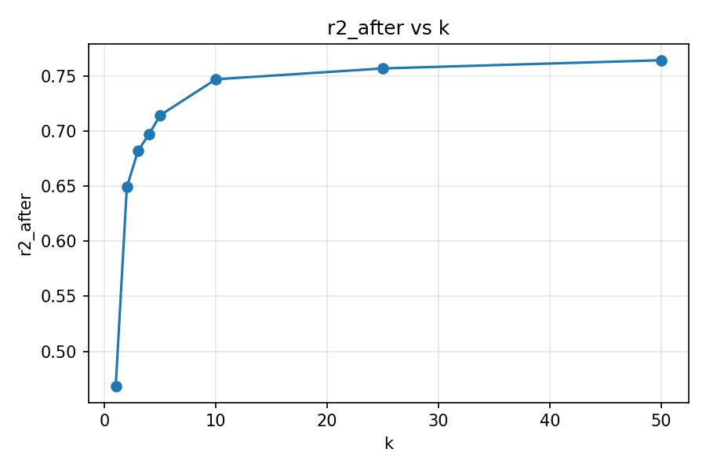

KNN Opinion Regression (Next-Video Config)¶
KNN Opinion Shift Study (Next-Video Config)¶
This section reuses the selected next-video recommendation configuration to estimate post-study opinion change.
Dataset:
data/cleaned_grailSplit: validation
Metrics: MAE / RMSE / R² / directional accuracy / MAE (change) / RMSE (change) / calibration slope & intercept / calibration ECE / KL divergence, compared against a no-change baseline.
TF-IDF Feature Space¶
Study |
Participants |
Best k |
Accuracy ↑ |
Baseline ↑ |
Δ Accuracy ↑ |
MAE ↓ |
Δ vs baseline ↓ |
RMSE ↓ |
R² ↑ |
MAE (change) ↓ |
RMSE (change) ↓ |
Δ RMSE (change) ↓ |
Calib slope |
Calib intercept |
ECE ↓ |
Δ ECE ↓ |
KL div ↓ |
Δ KL ↓ |
Baseline MAE ↓ |
|---|---|---|---|---|---|---|---|---|---|---|---|---|---|---|---|---|---|---|---|
Study 1 – Gun Control (MTurk) |
162 |
50 |
0.704 |
0.074 |
+0.630 |
0.030 |
+0.007 |
0.038 |
0.983 |
0.030 |
0.038 |
+0.008 |
0.199 |
0.020 |
0.008 |
— |
10.979 |
+10.467 |
0.037 |
Study 2 – Minimum Wage (MTurk) |
165 |
50 |
0.527 |
0.061 |
+0.467 |
0.093 |
+0.003 |
0.128 |
0.786 |
0.093 |
0.128 |
+0.010 |
1.079 |
0.007 |
0.018 |
— |
8.264 |
+10.105 |
0.096 |
Study 3 – Minimum Wage (YouGov) |
257 |
50 |
0.494 |
0.058 |
+0.436 |
0.088 |
-0.004 |
0.125 |
0.771 |
0.088 |
0.125 |
+0.001 |
0.155 |
0.018 |
0.022 |
— |
7.392 |
+9.188 |
0.084 |
Assets: see figures in |
Word2Vec Feature Space¶
Study |
Participants |
Best k |
Accuracy ↑ |
Baseline ↑ |
Δ Accuracy ↑ |
MAE ↓ |
Δ vs baseline ↓ |
RMSE ↓ |
R² ↑ |
MAE (change) ↓ |
RMSE (change) ↓ |
Δ RMSE (change) ↓ |
Calib slope |
Calib intercept |
ECE ↓ |
Δ ECE ↓ |
KL div ↓ |
Δ KL ↓ |
Baseline MAE ↓ |
|---|---|---|---|---|---|---|---|---|---|---|---|---|---|---|---|---|---|---|---|
Study 1 – Gun Control (MTurk) |
162 |
50 |
0.704 |
0.074 |
+0.630 |
0.030 |
+0.007 |
0.038 |
0.983 |
0.030 |
0.038 |
+0.008 |
0.101 |
0.023 |
0.006 |
— |
11.168 |
+10.277 |
0.037 |
Study 2 – Minimum Wage (MTurk) |
165 |
25 |
0.564 |
0.061 |
+0.503 |
0.091 |
+0.005 |
0.126 |
0.794 |
0.091 |
0.126 |
+0.013 |
1.025 |
0.012 |
0.027 |
— |
7.914 |
+10.455 |
0.096 |
Study 3 – Minimum Wage (YouGov) |
257 |
50 |
0.510 |
0.058 |
+0.451 |
0.089 |
-0.004 |
0.127 |
0.764 |
0.089 |
0.127 |
-0.001 |
-0.154 |
0.025 |
0.025 |
— |
9.488 |
+7.092 |
0.084 |
Assets: see figures in |
Sentence-Transformer Feature Space¶
Study |
Participants |
Best k |
Accuracy ↑ |
Baseline ↑ |
Δ Accuracy ↑ |
MAE ↓ |
Δ vs baseline ↓ |
RMSE ↓ |
R² ↑ |
MAE (change) ↓ |
RMSE (change) ↓ |
Δ RMSE (change) ↓ |
Calib slope |
Calib intercept |
ECE ↓ |
Δ ECE ↓ |
KL div ↓ |
Δ KL ↓ |
Baseline MAE ↓ |
|---|---|---|---|---|---|---|---|---|---|---|---|---|---|---|---|---|---|---|---|
Study 1 – Gun Control (MTurk) |
162 |
50 |
0.704 |
0.074 |
+0.630 |
0.030 |
+0.007 |
0.038 |
0.983 |
0.030 |
0.038 |
+0.008 |
0.030 |
0.025 |
0.009 |
— |
14.511 |
+6.935 |
0.037 |
Study 2 – Minimum Wage (MTurk) |
165 |
25 |
0.552 |
0.061 |
+0.491 |
0.089 |
+0.007 |
0.126 |
0.791 |
0.089 |
0.126 |
+0.012 |
1.073 |
0.007 |
0.032 |
— |
8.074 |
+10.294 |
0.096 |
Study 3 – Minimum Wage (YouGov) |
257 |
50 |
0.521 |
0.058 |
+0.463 |
0.089 |
-0.004 |
0.125 |
0.768 |
0.089 |
0.125 |
-0.000 |
0.083 |
0.019 |
0.020 |
— |
9.523 |
+7.057 |
0.084 |
Assets: see figures in |
Opinion Change Heatmaps¶
SENTENCE_TRANSFORMER¶




TFIDF¶



WORD2VEC¶

Cross-Study Diagnostics¶
TF-IDF Feature Space¶
Weighted Summary¶
Weighted MAE 0.073 across 584 participants.
Weighted baseline MAE 0.074 (+0.001 vs. final).
Weighted directional accuracy 0.562 across 584 participants.
Weighted baseline accuracy 0.063 (+0.498 vs. final).
Weighted RMSE (change) 0.102 (+0.005 vs. baseline).
Weighted calibration ECE 0.017 (— vs. baseline).
Weighted KL divergence 8.633 (+9.802 vs. baseline).
Largest MAE reduction: Study 1 – Gun Control (MTurk) (TFIDF) (+0.007).
Largest RMSE(change) reduction: Study 2 – Minimum Wage (MTurk) (TFIDF) (+0.010).
Lowest MAE: Study 1 – Gun Control (MTurk) (TFIDF) (0.030); Highest MAE: Study 2 – Minimum Wage (MTurk) (TFIDF) (0.093).
Biggest KL divergence reduction: Study 1 – Gun Control (MTurk) (TFIDF) (+10.467).
Highest directional accuracy: Study 1 – Gun Control (MTurk) (TFIDF) (0.704).
Lowest directional accuracy: Study 3 – Minimum Wage (YouGov) (TFIDF) (0.494).
Largest accuracy gain vs. baseline: Study 1 – Gun Control (MTurk) (TFIDF) (+0.630).
Unweighted MAE 0.070 (σ 0.028, range 0.030 – 0.093).
MAE delta mean 0.002 (σ 0.004, range -0.004 – 0.007).
Unweighted directional accuracy 0.575 (σ 0.092, range 0.494 – 0.704).
Accuracy delta mean 0.511 (σ 0.085, range 0.436 – 0.630).
RMSE (change) 0.097 (σ 0.042, range 0.038 – 0.128).
RMSE (change) delta 0.006 (σ 0.004, range 0.001 – 0.010).
Calibration ECE 0.016 (σ 0.006, range 0.008 – 0.022).
KL divergence 8.878 (σ 1.527, range 7.392 – 10.979).
KL divergence delta 9.920 (σ 0.538, range 9.188 – 10.467).
Word2Vec Feature Space¶
Weighted Summary¶
Weighted MAE 0.073 across 584 participants.
Weighted baseline MAE 0.074 (+0.002 vs. final).
Weighted directional accuracy 0.579 across 584 participants.
Weighted baseline accuracy 0.063 (+0.515 vs. final).
Weighted RMSE (change) 0.102 (+0.005 vs. baseline).
Weighted calibration ECE 0.020 (— vs. baseline).
Weighted KL divergence 9.510 (+8.926 vs. baseline).
Largest MAE reduction: Study 1 – Gun Control (MTurk) (WORD2VEC) (+0.007).
Largest RMSE(change) reduction: Study 2 – Minimum Wage (MTurk) (WORD2VEC) (+0.013).
Lowest MAE: Study 1 – Gun Control (MTurk) (WORD2VEC) (0.030); Highest MAE: Study 2 – Minimum Wage (MTurk) (WORD2VEC) (0.091).
Biggest KL divergence reduction: Study 2 – Minimum Wage (MTurk) (WORD2VEC) (+10.455).
Highest directional accuracy: Study 1 – Gun Control (MTurk) (WORD2VEC) (0.704).
Lowest directional accuracy: Study 3 – Minimum Wage (YouGov) (WORD2VEC) (0.510).
Largest accuracy gain vs. baseline: Study 1 – Gun Control (MTurk) (WORD2VEC) (+0.630).
Unweighted MAE 0.070 (σ 0.028, range 0.030 – 0.091).
MAE delta mean 0.003 (σ 0.005, range -0.004 – 0.007).
Unweighted directional accuracy 0.592 (σ 0.082, range 0.510 – 0.704).
Accuracy delta mean 0.528 (σ 0.075, range 0.451 – 0.630).
RMSE (change) 0.097 (σ 0.042, range 0.038 – 0.127).
RMSE (change) delta 0.006 (σ 0.006, range -0.001 – 0.013).
Calibration ECE 0.019 (σ 0.009, range 0.006 – 0.027).
KL divergence 9.523 (σ 1.329, range 7.914 – 11.168).
KL divergence delta 9.275 (σ 1.545, range 7.092 – 10.455).
Sentence-Transformer Feature Space¶
Weighted Summary¶
Weighted MAE 0.073 across 584 participants.
Weighted baseline MAE 0.074 (+0.002 vs. final).
Weighted directional accuracy 0.580 across 584 participants.
Weighted baseline accuracy 0.063 (+0.517 vs. final).
Weighted RMSE (change) 0.101 (+0.005 vs. baseline).
Weighted calibration ECE 0.021 (— vs. baseline).
Weighted KL divergence 10.497 (+7.938 vs. baseline).
Largest MAE reduction: Study 2 – Minimum Wage (MTurk) (SENTENCE_TRANSFORMER) (+0.007).
Largest RMSE(change) reduction: Study 2 – Minimum Wage (MTurk) (SENTENCE_TRANSFORMER) (+0.012).
Lowest MAE: Study 1 – Gun Control (MTurk) (SENTENCE_TRANSFORMER) (0.030); Highest MAE: Study 2 – Minimum Wage (MTurk) (SENTENCE_TRANSFORMER) (0.089).
Biggest KL divergence reduction: Study 2 – Minimum Wage (MTurk) (SENTENCE_TRANSFORMER) (+10.294).
Highest directional accuracy: Study 1 – Gun Control (MTurk) (SENTENCE_TRANSFORMER) (0.704).
Lowest directional accuracy: Study 3 – Minimum Wage (YouGov) (SENTENCE_TRANSFORMER) (0.521).
Largest accuracy gain vs. baseline: Study 1 – Gun Control (MTurk) (SENTENCE_TRANSFORMER) (+0.630).
Unweighted MAE 0.069 (σ 0.028, range 0.030 – 0.089).
MAE delta mean 0.003 (σ 0.005, range -0.004 – 0.007).
Unweighted directional accuracy 0.592 (σ 0.080, range 0.521 – 0.704).
Accuracy delta mean 0.528 (σ 0.073, range 0.463 – 0.630).
RMSE (change) 0.097 (σ 0.042, range 0.038 – 0.126).
RMSE (change) delta 0.007 (σ 0.005, range -0.000 – 0.012).
Calibration ECE 0.021 (σ 0.009, range 0.009 – 0.032).
KL divergence 10.703 (σ 2.757, range 8.074 – 14.511).
KL divergence delta 8.095 (σ 1.556, range 6.935 – 10.294).
Takeaways¶
Study 1 – Gun Control (MTurk): best R² 0.983 with SENTENCE_TRANSFORMER (k=50); largest MAE reduction +0.007 via WORD2VEC.
Study 2 – Minimum Wage (MTurk): best R² 0.794 with WORD2VEC (k=25); largest MAE reduction +0.007 via SENTENCE_TRANSFORMER.
Study 3 – Minimum Wage (YouGov): best R² 0.771 with TFIDF (k=50); largest MAE reduction -0.004 via TFIDF.